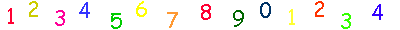
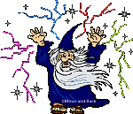
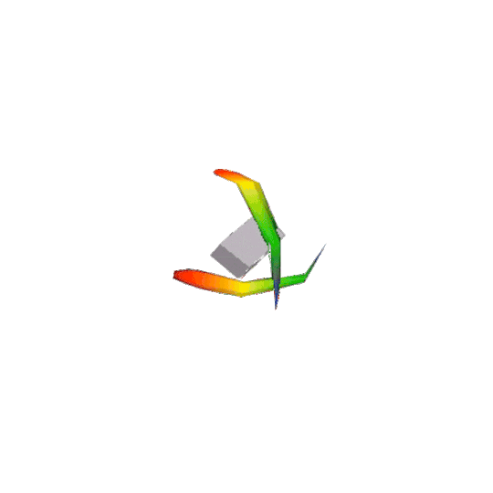
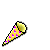

Seja um mago dos calendários!!!
Seja um mago dos calendários!!!
Seja bem vindo, pequeno gafanhoto!!
Então você está interessado no domíno da magia? Quer saber como os magos sabem o dia da semana de qualquer data???
Bem, pode começar por decorar todos os calendários desde 1583, depois de anos e anos de estudos você começa a ficar mais ou menos.
...
Brincadeira nós usamos um feitiço ancião criado pelo grande Mestre dos Calendários John Conway
e esse feitiço se chama...
O Algoritmo das Doomsdays

Números
O primeiro passo para ser um mago é falar como um mago. Nós magos não falamos segunda-feira, quinta-feira, não não, muitas letras, muita coisa, muito chato. Além disso, oq raios é segunda feira + 5??? agora, 1 + 5 é tranquilo.
Os magos falam assim:
Dia da Semana |
Número |
Domingo |
0 |
Segunda |
1 |
Terça |
2 |
Quarta |
3 |
Quinta |
4 |
Sexta |
5 |
Sábado |
6 |

Doomsdays
Mas o que são doomsdays afinal? São uma lista de dias do ano que caem juntos no mesmo dia da semana, se um deles cai em uma terça, por exemplo, todos os outros também caem.
Aqui estão algumas:
Lista de doomsdays:
-
04/04, 06/06, 08/08, 10/10, 12/12
-
09/05, 05/09, 11/07, 07/11
-
em Janeiro e Fevereiro, depende se o ano é bissexto ou não: 03/01 e 28/02 se não é, ou 04/01 e 29/02, se é bissexto.
-
Dia das Bruxas (31/10) , Dia do Pi (14/03) , dia depois do Natal (26/12) , Dia da Independência americana (04/07)
-
E mais uns 30 e tantos outros dias...
No ano do qual vos falo, 2026, todas as doomsdays caem no sábado!!! Ou seja, todos esses dias caem em um sábado. Mas, ALÉM DISSO, qualquer dia q cai no sábado em 2026, também é uma doomsday.
Se você quiser, você pode expandir essa lista com outras datas memoráveis pra você que também sejam doomsdays, eu tenho o aniversário da minha gata (26/09), da minha melhor amiga, Vanessa (15/08) e do Freddie Mercury (05/09)!!!.

Âncora
Tá, legal, já sei que toda essa galera cai junta, e sei que em 2025 elas caem na sexta... mas e nos outros anos?
Nós começamos definindo uma âncora, baseada no "século", os dois primeiros números do seu ano.
A partir dele, fazemos o mod (resto da divisão) por 4, e seguimos essa tabela:
XX mod 4 |
Âncora |
0 |
2 |
1 |
0 |
2 |
5 |
3 |
3 |
Ex: 2026
Pegando 2026 como exemplo, nosso "século" é 20.
20 mod 4 é 0, pois o 20 dividido por 4 dá 5 certinho, o resto é 0.
Então, seguindo a tabela, 0 -> 2, nossa âncora é 2!
Doomsday do Ano
Com a âncora definida, vamos chegar no nosso ano! As doomsdays caminham assim:
2000 é 2
2001 é 3
2002 é 4
2003 é 5
2004 é 6?... não, é 0, errou.
Aumenta de 1 em 1 a cada ano, menos nos bissextos que aumentam 2. Então quando você passa por anos múltiplos de 4, preste atenção.
Nooossa, mas e se eu quiser chegar no 2097???? Tem que ir de 1 em 1???
Não, não, calma, nós temos checkpoints: O ciclo das doomsdays é de 28 anos, então nos anos múltiplos de 28, você adiciona 0 à âncora. E também, tem um negocinho legal com os anos múltiplos de 12: você pode adicionar a multiplicidade à âncora. Ex: 2036 = 2 (âncora) + 3 (36 = 3 * 12) = 5!!
Ano |
Âncora + |
28 |
+ 0 |
56 |
+ 0 |
84 |
+ 0 |
Ano |
Âncora + |
12 |
+ 1 |
24 |
+ 2 |
36 |
+ 3 |
48 |
+ 4 |
60 |
+ 5 |
72 |
+ 6 |
84 |
+ 0 |
96 |
+ 1 |
Ex: 2026
Século = 20 => Âncora: 2
26 = 24 + 2
24 = 12 * 2
Doomsday de 2025 = 2 (âncora) + 2 (24) + 2 (24 + 2) = 6 (sábado)

Juntando Tudo
Com a doomsday do ano, é só fazer a diferença da doomsday mais próxima para da data desejada!
Vamos fazer alguns exemplos completos:
Ex1: 16/08/2005 (verboso)
-
Âncora:
O "século" do ano 2005 é 20: 2005
20 % 4 = 0
Segundo a tabela: 0 => 2
-
Doomsday do Ano
2005
05 = +5 anos
Mas 5 é maior que 4, passamos por um ano bissexto! +1 bissexto
Adicionamos à âncora: 2 + 5 + 1 = 8
Usamos só os números de 0 a 6: 8 = 7 + 1 => 1 (Segunda)
-
Data Desejada
Doomsday mais próxima: 08/08
O dia 16 está a 8 dias do dia 8: 16/08 = 08/08 + 8 = +1
Adicionamos essa diferença à doomsday do ano: 1 + 1 = 2 !!
O dia 16/08/2005, o dia em que eu nasci, é uma Terça-feira!!! 
Ex2: 06/01/2230
-
Âncora:
2230
22 % 4 = 2
2 => 5
-
Doomsday do Ano
2230
30 = 24 + 6
6 é maior que 4 => + 1
24 = 12 * 2 => +2
+ 2 + 6 + 1 = +9 = +2
5 + 2 = 7 = 0
-
Data Desejada
Doomsday mais próxima: 03/01 (2230: não é bissexto)
06/01 = 03/01 + 3 = +3
0 + 3 = 3 !!
O dia 06/01/2230, o aniversário do Spock de Star Trek, é uma Quarta-feira!!!
Ex3: 24/08/1954
-
Âncora:
1954
19 % 4 = 3
3 => 3
-
Doomsday do Ano
1954
54 = 48 + 6
6 é maior que 4 => +1
48 = 12 * 4 => +4
+ 4 + 6 + 1 = +11 = +4
3 + 4 = 7 = 0
-
Data Desejada
Doomsday mais próxima: 08/08
24/08 = 08/08 + 16 = +2
0 + 2 = 2 !!
O Getulio Vargas "saiu da vida para entrar na História" no dia 24/08/1954, uma Terça-feira!!!
Aqui um mago.gif super descolado q implementa o Algoritmo das Doomsdays em JS:
(clique com o botão direito, vá em inspecionar, debugger e dentro da pasta assets/scripts está o código pra vc dar uma olhada!!!)
:OOOOOO Tá vendo como esse cara é tipo super maneiro por saber o dia da semana?? ^^^^^
vc pode ser IGUALZINHO a ele
A prática leva à perfeição ilusão.
Agora o negócio é treinar treinar treinar, quão mais rápido você conseguir fazer a conta e menos erros você cometer, mais convincente será o truque. E para isso é preciso prática.
O nosso mago mestre conseguia calcular os dias em 2 segundos! Ele programou seu computador para o testar sempre que ele tentasse desbloquear, eu fico brincando no meu tempo vago com um programinha que eu fiz, meu recorde é 4.5s. Tá aqui se vocês quiserem:
Ou, se vocês não quiserem compilar e ter o programinha no compiuter de vocês, tem a versão web também: